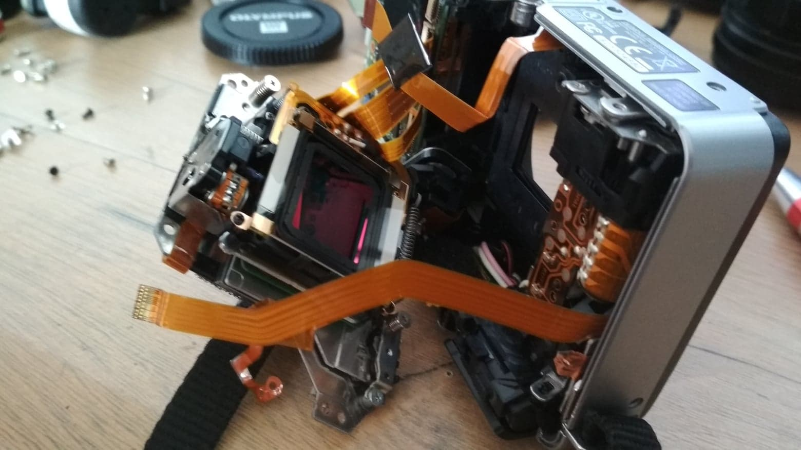

Human eye can see light in range of about 380 – 740nm but CMOS sensor commonly used in cameras is capable of reregistering light in wider spectrum, starting in infrared ~1100nm to UV-A ~200nm. Sensitivity may differ depending on manufacturer. Average camera doesn’t see the hidden part of the spectrum. It’s because it has special filters that block certain parts of light, therefore letting it see the world as we see it. In order to take picture in UV or IR we firstly had to remove the blocking filter.
The UV/IR blocking filter is usually placed right in front of a sensor. If you want to try removing it yourself be very careful, as it is very easy to damage fragile parts of the camera. Be aware that removing this filter slightly changes way of the light to sensor, potentially leading to trouble with sharp focus.
When camera is converted to see in full spectrum it takes pictures in full range of wavelengths. The benefits of which are that the camera can capture pictures in low light conditions and see things invisible to human eye. The downsides are that optical path of lens was not designed to focus that wide spectrum leading to poor sharpness and big aberration problems and that image produced this way will be in false color.
As you can see the photo shoot in full spectrum is blurred, trees and grass are yellow and black elements of clothing are pale. The color difference is changed due to infrared light emitted by Sun. The visibly black shirt ( right ) appears light-colored because it’s reflecting infrared light, but the seemingly same colored boots still look black.
In order to take a picture in the spectrum chosen by us, we used various bandpass filters. There are widely available infrared and UV pass filters, which can be found on sites like Aliexpress or Ebay.
Infrared photography ( example above ) is easy and can give amazing results. It’s fun to discover new invisible world through camera lens. UV photography is harder due to infrared pollution (most UV pass filters also partially transmit in IR) and low sensitivity in that spectrum. Analyzing the photo can lead to interesting discoveries, for example that coke and soy sauce are transparent in IR or that sunscreen is pitch black in UV. Below are examples of photos of same objects in four different spectrums.

Visible light

Infrared

Ultraviolet

Infrared phosphorescence
Choosing a specific spectrum has both esthetics and scientific basis. In some cases it’s crucial for identifying photographed objects. For example above UV photo allows us to notice that calcite ( transparent mineral in lower right corner ) is absorbing UV radiation, when ruby ( mineral on left of calcite ) strongly fluoresces in IR whilst lit by visible light. We can deduce much information from photos like this. Applications of spectral photography are endless starting with IR scanner, showing nurses veins in our body, to farming drones monitoring crops.